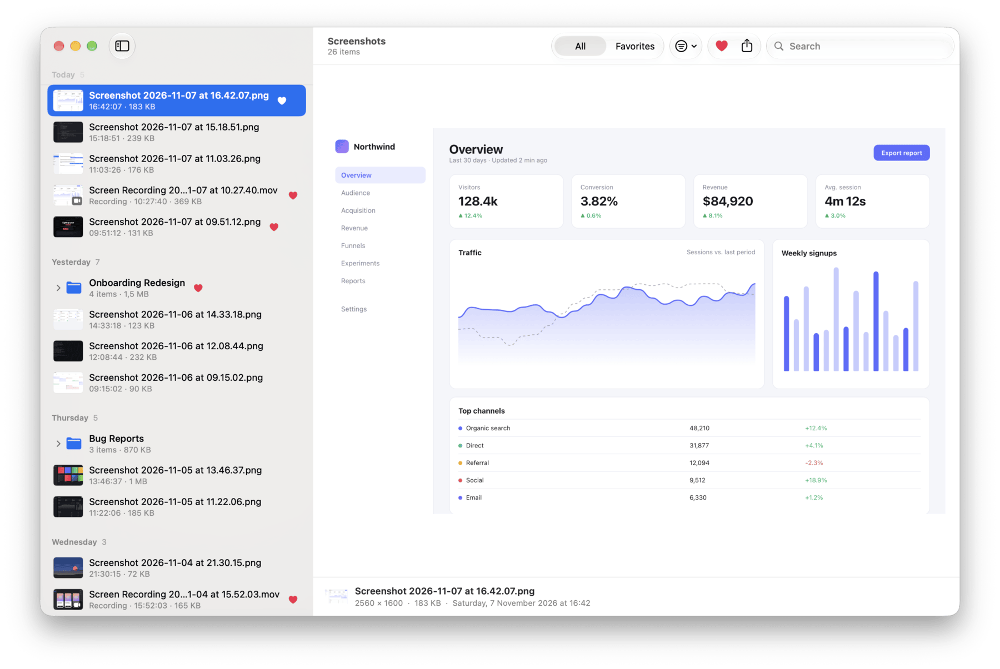
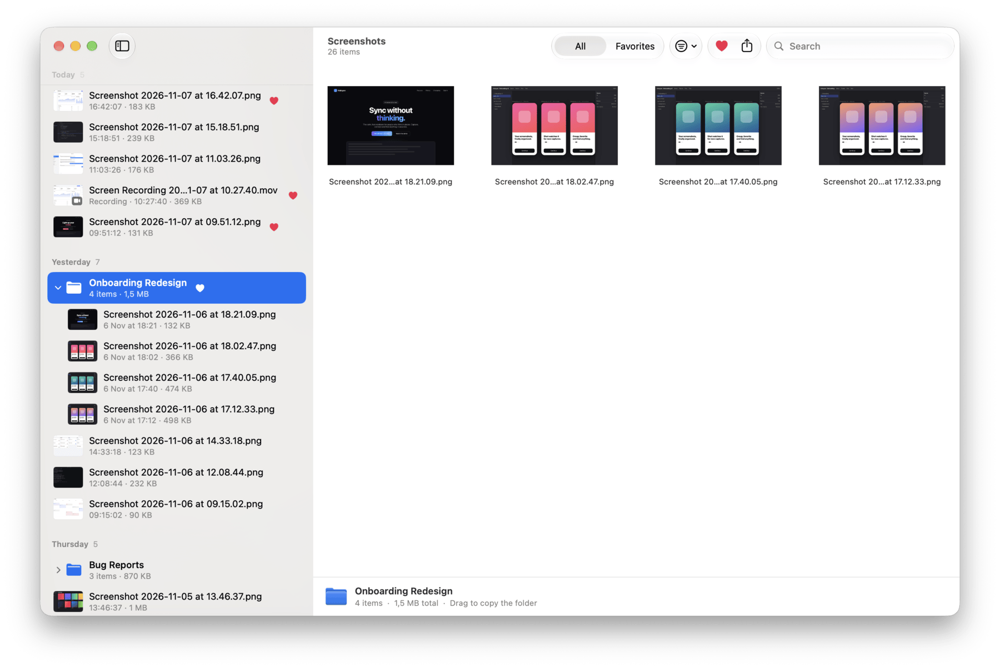
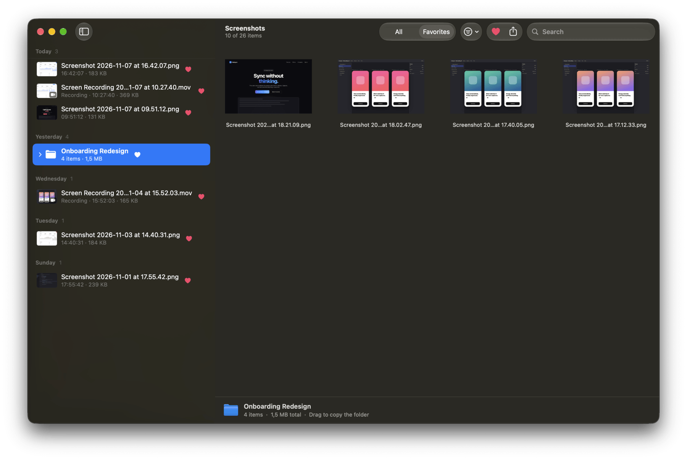

Shot turns the endless pile of “Screenshot at 16.42.07” files into a timeline you can browse, group and search, all in a fast, native Mac app.
Free and open source · macOS 14 Sonoma or later · Apple silicon & Intel

No import, no library, no database. Shot works directly on your screenshots folder, so nothing is ever locked in.
Shot finds the folder macOS saves screenshots to and watches it. New captures appear the moment you take them.
Browse by day, week or month: Today, Yesterday, last Thursday. Sort by date, name or size.
Select a few screenshots and press ⌘G. Shot moves them into a subfolder, which Finder sees too.
Heart the screenshots that matter with a single key, then see only those with ⌘2.
Screen recordings play inline next to your screenshots. Filter to show just one kind.
Built with AppKit for speed. No account, no network access, no tracking. Your screenshots never leave your Mac.
Gather the screenshots for a redesign, a bug report or a trip into a group. Expand it in the sidebar, or select it to see everything at a glance.

Filter to your favorites, search by name, and press Space for Quick Look. When you find it, copy the image, drag it into any app or share it.

Every action has a shortcut that works the way you expect on a Mac.